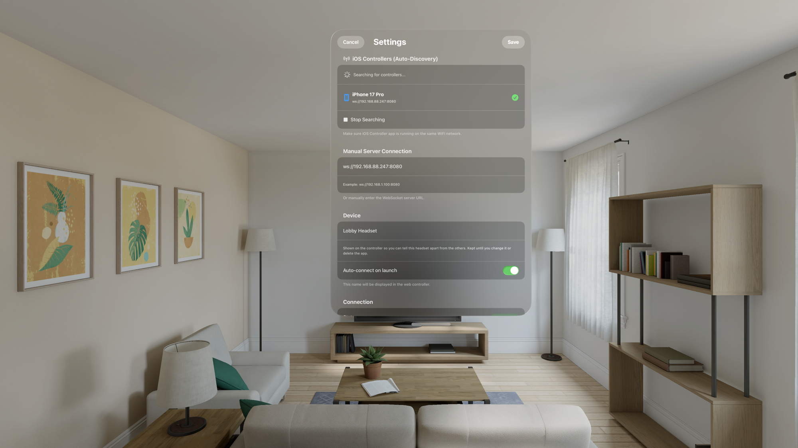
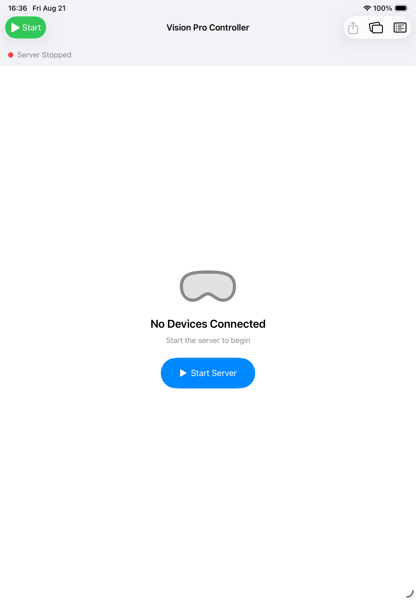
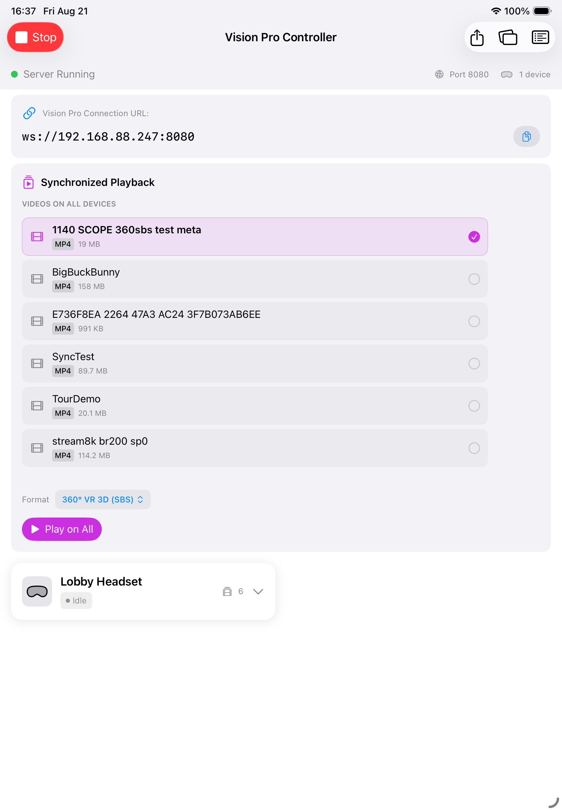
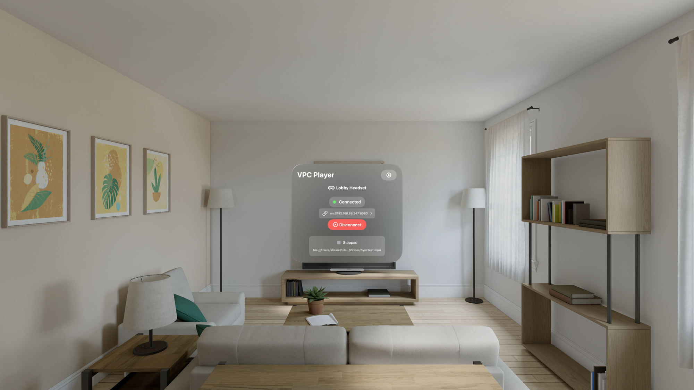
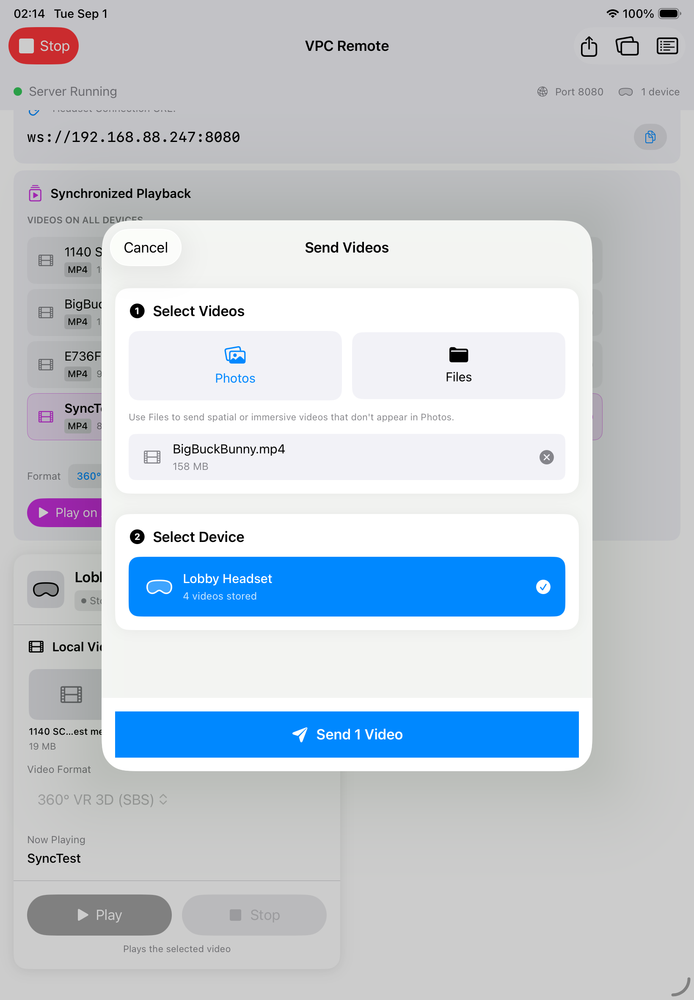
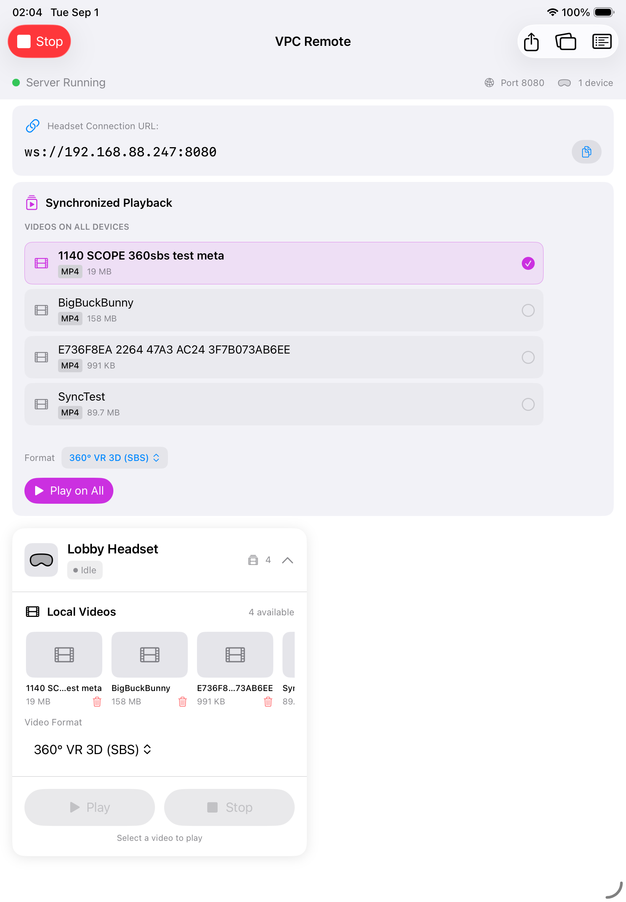
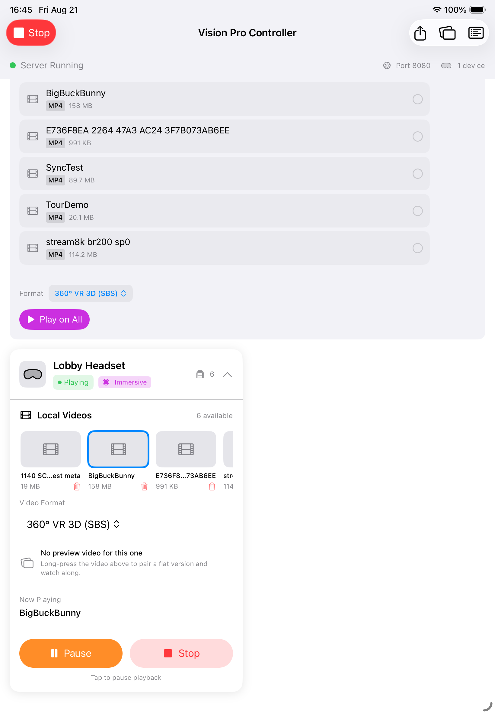
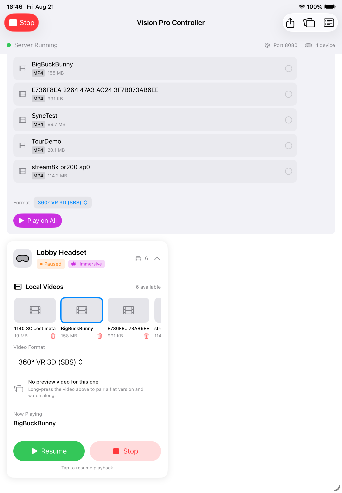
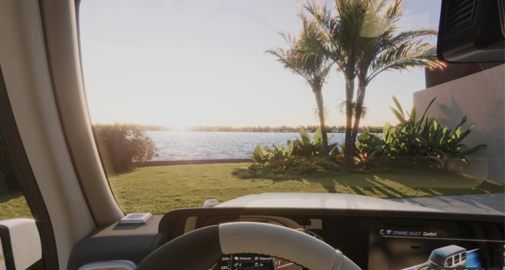
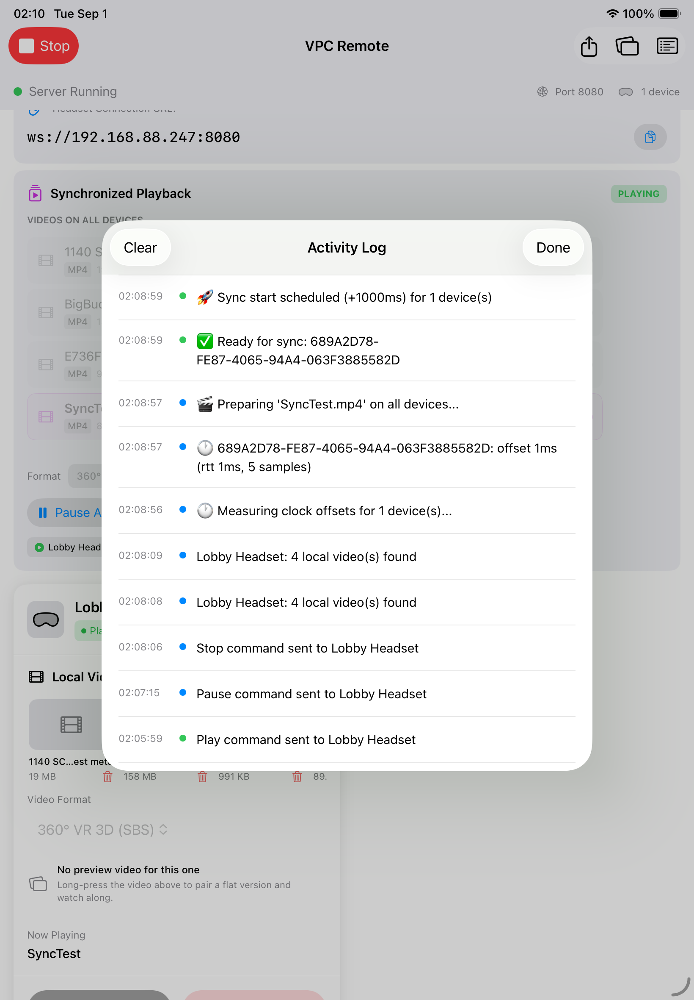

Loading video onto headsets, naming it so a group can play together, running single and synchronised playback, and diagnosing a headset that will not connect.
Operators running one or more Vision Pro headsets from a tablet
Screenshots
Captured from the running apps: VPC Remote on iPad, VPC Player on visionOS 26.1
Document date
21 August 2026
Contents
Installing the two apps
How the system fits together
What the network has to allow
Naming each headset
Starting the controller
How a headset finds its controller
Getting video onto a headset
Naming videos — the rule that makes group playback work
Playing on one headset
Playing on every headset at once
Status badges at a glance
Icons you will see
Seeing what the wearer sees
Removing a video from a headset
When something does not work
Quick reference
1. Installing the two apps
Nothing in this guide works until both apps are installed. They are separate downloads from the App Store, and each goes on a different kind of device.
Install VPC Player on every headset you intend to run — each one plays from its own storage, so each one needs the app. Install VPC Remote on the single tablet or phone you will operate from.
Which device gets which appVPC Player is a visionOS app and will only install on a Vision Pro. VPC Remote is an iPadOS / iOS app and will only install on an iPad or iPhone. Neither one does the other's job, and the system needs both.
Do this before the dayInstall, open each app once, and name every headset (section 4) while you still have time and a network you control. An App Store download on venue Wi-Fi, on the morning of an event, is not a plan.
2. How the system fits together
There are two apps, and they have different jobs.
App
Runs on
Role
VPC Remote
iPad or iPhone
The operator's app. It is the server: it hands out commands, stores nothing permanently, and copies video files to the headsets.
VPC Player
Each Vision Pro
Plays the video. It stores its own copy of every video locally and connects out to the controller.
Controller (iPad)WebSocket server on port 8080 · file server on port 8081 · advertises itself on the network
→
Wi-Fi networkOne ordinary local network. No internet connection is required.
→
Each Vision ProFinds the controller by itself, connects, reports its video list and playback state
Two consequences worth understanding before anything else:
Video is never streamed during playback. Each headset plays a file it already holds on its own storage. The network is only used for commands, status, and the one-off copy of a file. A weak network can stop a headset connecting, but it cannot stutter a video that is already playing.
The controller is the server. If the controller app is closed or its server is stopped, every headset loses its link. The headsets keep whatever they were doing but can no longer be commanded.
3. What the network has to allow
The two apps find each other automatically, but only if the network permits it. In order of how often each one causes trouble:
Requirement
Why, and what breaks without it
Same Wi-Fi network, same subnet
The headsets look for the controller on the local network only. A headset on a guest network, a different SSID, or a different VLAN will never see it — even if both have internet.
Client isolation OFF (also called AP isolation, client separation, or guest mode)
This setting stops devices on the same Wi-Fi from talking to each other. It is on by default on most guest and hotel networks and it blocks this system completely. This is the single most common cause of "the headset never appears".
mDNS / Bonjour allowed
Auto-discovery uses multicast DNS. Some managed and enterprise networks filter it. If it is blocked, discovery fails but the manual address (section 6) still works.
TCP ports 8080 and 8081 open between devices
8080 carries commands and status; 8081 carries the video file during a transfer. A firewall between the devices will break one or both.
All devices on one band, or a single merged SSID
Some routers keep 2.4 GHz and 5 GHz as separate isolated networks. If the tablet is on one and a headset on the other, they may not see each other.
The reliable setupA dedicated router or a phone hotspot that you control, with client isolation off, carrying nothing but the tablet and the headsets. No internet needed. This removes every variable above at once and is what to use for a live event.
Do not rely on a venue's public Wi-FiPublic, guest and conference networks almost always have client isolation enabled, and you usually cannot turn it off. Test on the actual network before the event, not on the day.
4. Naming each headset
With more than one headset in the room, every one of them is called "Vision Pro" until you name it. Do this once per headset, before anything else — it is what you will see on the controller and in the log for the rest of the event.
On the headset: open VPC Player → the gear icon (or tap the address line) → Device → type a name → Save.

12345678910
Figure 1. VPC Player → Settings. Everything the headset needs in order to be found and identified.
1
Cancel — closes Settings without keeping the changes.
2
Save — keeps them. The device name and chosen controller are remembered until you change them again or delete the app.
3
iOS Controllers (Auto-Discovery) — controllers the headset can currently see on the network. Built automatically; you type nothing to populate it.
4
Searching for controllers… — the headset is actively looking. If it never finds anything, the network is blocking discovery.
5
A discovered controller — its name and the address it is reachable at. Tap a row to use that controller.
6
Green tick — the controller this headset is connected to right now.
7
Same-network reminder — headset and controller must be on the same Wi-Fi network. The single most common cause of a headset not appearing.
8
Manual Server Connection — the fallback. Type the address shown on the controller if auto-discovery cannot work on this network.
9
Device name — this is how you name a headset. Give each one a distinct, physical name ("Lobby Headset", "Seat 1"). It appears on the controller card and in the log.
10
Auto-connect on launch — leave this ON. The headset then reconnects by itself whenever the app opens or the Wi-Fi comes back.
Name them after the physical world, not the hardwareUse "Seat 1", "Seat 2", "Lobby Headset" — something a person holding the device can verify at a glance. Serial numbers and user names are useless when you are trying to work out which of five identical headsets has frozen. The name is kept until you change it or delete the app.
5. Starting the controller
Open VPC Remote on the tablet. On first launch the server is not running.

1234
Figure 2. Controller app, server not yet started. Nothing can reach the headsets in this state.
1
Start — the master switch in the navigation bar. The same button becomes Stop once running.
2
Server Stopped — red dot. While this says Stopped, no headset can connect, no video can be sent, and nothing is discoverable on the network.
3
No Devices Connected — the headset list is empty. Expected before the server is started.
4
Start Server — starts the WebSocket server on port 8080, the file-transfer server on port 8081, and begins advertising the controller so headsets can find it by themselves.
Tap Start Server. The header turns green and the connection details appear. From this moment the controller is discoverable and headsets can join.

12345678910111213141516
Figure 3. Controller app with the server running and one headset connected.
1
Stop — stops the server. Every headset disconnects immediately.
2
Server Running — green dot. The only state in which headsets can connect.
3
Port 8080 — the WebSocket control port the headsets talk to.
4
1 device — how many headsets are connected right now. If this says 0, no headset has found the controller.
5
Send Videos= (the box with an arrow leaving it) — opens the transfer sheet used to copy a video onto a headset.
6
Preview Library (two stacked rectangles) — the library of flat companion videos kept on the tablet. These are never sent to a headset; they exist so the operator can watch along on the tablet. Import them here, then pair one to a headset video by long-pressing its tile.
7
Activity Log (lines in a box) — the timestamped record of everything the controller did. The first place to look when something behaves unexpectedly.
8
Headset Connection URL — the address of this controller. Headsets normally find it automatically; this is what you would type by hand if they do not.
9
Copy — copies that URL to the clipboard.
10
VIDEOS ON ALL DEVICES — only videos whose filename is identical on every connected headset appear here.
11
Selection tick — the video that Play on All will use.
12
Format — how the headsets should interpret the picture (360°, 180°, side-by-side, over-under, flat). Must match the actual video.
13
Play on All — starts the selected video on every connected headset at the same instant.
14
Headset card — one card per connected headset, titled with that headset's own device name.
15
Status badge — Idle / Playing / Paused / Stopped, plus Immersive when the headset has its immersive view open.
16
Video count and chevron — how many videos this headset holds; tap the chevron to expand the card.
Order does not matterYou can start the controller before or after opening the app on the headsets. Whichever comes second will find the other within a few seconds. What is required is that both are running at the same time — a headset with the app closed is invisible.
6. How a headset finds its controller
The headset does this by itself. The controller announces its presence on the local network; each headset watches for that announcement and connects.

1234567
Figure 4. The VPC Player window as the wearer sees it. The app must be open on this window for the headset to be controllable.
1
Device name — which headset this is. Set it per headset so the operator can tell them apart.
2
Settings — opens the panel in the previous figure.
3
Connected — green means this headset has a live link to a controller. Disconnected or Connecting… means it does not.
4
Controller address — the controller this headset is actually talking to. Tap it to open Settings.
5
Disconnect — drops the link deliberately. Only needed when moving a headset to a different controller.
6
Playback state — mirrors what the controller shows for this headset.
7
Current file — the exact file the headset has loaded. Useful when checking that every headset really is on the same video.
The tablet's own address on this Wi-Fi network, and the control port. This is what the headsets connect to. It changes when the tablet joins a different network, which is normal.
Headset Settings, under a discovered controller
The same address, as the headset resolved it. If it matches the tablet, discovery is working.
Headset main window, the address line
The controller this headset is actually connected to right now.
The headset remembers the controller, not the addressIt stores which controller it was paired with and re-resolves the address every time. So a new address from the router after a restart does not strand a headset — it will find the same controller again on its own.
If it does not connect on its own
Use the manual route: read the address from the controller (figure 3, callout 8), then on the headset open Settings → Manual Server Connection and type it exactly, including ws:// and :8080. If the manual address works but discovery does not, the network is filtering mDNS — see section 14.
7. Getting video onto a headset
Every headset plays from its own local copy, so the file has to physically be on each headset that will play it. There are two ways to put it there.
Route A — send it from the controller (normal)
Tap the share icon in the controller's toolbar (figure 3, callout 5).

12345678910
Figure 5. Send Videos — copying a video from the controller onto one headset.
1
Cancel — closes the sheet. Nothing is sent.
2
Step 1 — Select Videos — choose the file(s) to copy.
3
Photos — pick from the tablet's photo library. Warning: Photos does not preserve the original filename — see callout 6.
4
Files — pick from the Files app, iCloud Drive or a connected drive. This preserves the real filename and is the recommended route.
5
Hint — Vision Pro / spatial videos often do not appear in Photos at all; use Files for those.
6
The filename that will be used. Whatever is shown here becomes the filename on the headset — check it before sending. A video taken from Photos can arrive as a meaningless identifier such as E736F8EA-2264-47A3-AC24-3F7B… instead of its real name, which is exactly what breaks group playback. Via Files it keeps the name it already had, as here.
7
Remove — takes this file out of the selection.
8
Step 2 — Select Device — which headset receives the file. One headset per send; repeat for each.
9
A headset — its name and how many videos it already holds. Tap to select.
10
Send — starts the copy over Wi-Fi. Progress appears in the Activity Log; the headset's video list refreshes automatically when it finishes.
The copy runs over Wi-Fi on port 8081. Progress appears in the Activity Log, and the headset's video list refreshes by itself when it lands.
One headset at a timeStep 2 takes a single device. To put the same video on five headsets you repeat the send five times — and every copy must end up with the same filename, which is what section 8 is about.
Route B — put the file on the headset directly
The player reads from its own Documents/Videos folder. Anything placed there appears in the headset's local video list after the app rescans (it rescans on launch and whenever the app comes back to the foreground).
Use this when you have very large files and access to the headset directly — copying a 20 GB immersive file over Wi-Fi is slow, and putting it in place with a cable or via the Files app is much faster.
Files app on the headset: Files → On My Vision Pro → VPC Player → Videos → paste the file there.
From a Mac (Xcode): Devices and Simulators → select the headset → Installed Apps → VPC Player → download the container, drop the file into Documents/Videos, then replace the container.
Both routes end in the same placeDocuments/Videos inside the VPC Player app. A video that is in that folder will play; one that is anywhere else will not be seen.
8. Naming videos — the rule that makes group playback work
This is the part that most often goes wrong, so it is worth being precise.
The ruleA video appears under VIDEOS ON ALL DEVICES only if a file with exactly the same filename exists on every connected headset. The comparison is on the whole filename including the extension, and it is case sensitive.
So Tour.mp4 and Tour.MP4 are two different videos as far as the controller is concerned, and a headset holding one and a headset holding the other have nothing in common — the list will be empty and Play on All will have nothing to offer.
The three traps
Trap
What happens
How to avoid it
Importing from Photos
The photo library does not keep the original filename. The file arrives as something like E736F8EA-2264-47A3-AC24-3F7B073AB6EE.mp4 (figure 5, callout 6). It still works, but nobody can read it, and if you import the same video from Photos twice you may get two different identifiers.
Import from Files instead. It preserves the real filename.
Sending the same video twice to one headset
The headset never overwrites. The second copy is saved as name_1.mp4, the third as name_2.mp4. That headset now has a filename none of the others have, and the video silently drops out of the "all devices" list.
Check the headset's local list first. If the video is already there, do not send it again — delete the old copy first if you need to replace it.
Renaming on only some headsets
Any difference at all — a space, a capital letter, a different extension — splits the group.
Decide the filename once, before the first transfer, and never change it per device.
A naming convention that holds up
Letters, digits, hyphens and underscores only. No spaces — they survive here but cause trouble everywhere else in a production chain.
All lower case, consistently. That removes the .mp4 / .MP4 class of mistake entirely.
Put the format in the name so the operator can pick the right one under pressure: tour-lobby_360sbs.mp4, welcome_180sbs.mp4, safety-briefing_flat.mp4.
Rename the file on the computer, once, before you transfer it anywhere.
Verify before the audience arrivesAfter loading every headset, look at VIDEOS ON ALL DEVICES. If a video is in that list, every connected headset has it under that exact name and group playback will work. If it is missing, it is missing from at least one headset — expand each card and compare the local lists to find which.
9. Playing on one headset
Expand a headset's card with the chevron (figure 3, callout 16).

123456789
Figure 6. An expanded headset card, with no video selected yet.
1
Headset name — as set on that headset.
2
Status badge — Idle here: connected but not playing anything.
3
Local Videos — what is actually stored on this headset.
4
4 available — the count. If a video you sent is missing, it never arrived; check the Activity Log.
5
Video tile — tap to select it for this headset. It gets a blue outline when selected.
6
Delete (trash) — permanently removes that video from the headset. You are asked to confirm first.
7
Video Format — the per-headset format used by this card's Play button. Set it to match the video you are about to play.
8
Play — greyed out until a video is selected.
9
Stop — greyed out because nothing is playing.
Select a video tile, set Video Format to match the video, then tap Play. The headset opens its immersive view and begins.

12345678
Figure 7. The same card while the headset is playing.
1
Playing — green. The headset is rendering the video now.
2
Immersive — purple. The immersive view is open, so the wearer is inside the video rather than looking at a window.
3
Blue outline — the video currently selected on this card.
4
Video Format — what this playback was started with.
5
No preview video for this one — no flat companion is paired, so the operator cannot watch along. Long-press a video tile to pair one.
6
Now Playing — the file the headset actually loaded. Check this when verifying that every headset is on the same video.
7
Pause — freezes the picture at the current position and keeps the immersive view open.
8
Stop — ends playback, closes the immersive view and returns the wearer to the app window.
What the three buttons actually do
Button
Effect on the headset
Immersive view
Play
Opens the immersive view, loads the selected file and starts it from the beginning.
Opens
Pause
Freezes on the current frame. Position is kept.
Stays open — the wearer keeps looking at a still frame
Resume
Continues from the paused position.
Stays open
Stop
Ends playback and releases the file. Position is not kept — the next Play starts from the beginning.
Closes — the wearer is returned to the app window

1234
Figure 8. After Pause. The button becomes Resume; the immersive view stays open.
1
Paused — orange. The video is held at its current position.
2
Immersive still lit — the wearer is still inside the immersive view looking at a frozen frame, not dropped back to the window.
3
Resume — continues from exactly where it paused.
4
Stop — ends the session instead of resuming.
When a video reaches its endThe headset stops by itself, closes the immersive view and brings the window back, exactly as if Stop had been pressed. You do not need to clear anything before starting the next video.
Choosing the format
The format tells the headset how to interpret the picture. It is not detected for you — if it is wrong, the video plays but looks wrong.
Format
Use for
Symptom if wrong
2D
An ordinary flat film
—
3D SBS / 3D OU
Flat stereoscopic film, two images packed side-by-side or one above the other
Two squashed copies of the picture
180° VR / 180° VR 3D (SBS)
Half-sphere content filling the front of the view
Content wrapped around too far, or only half the sphere filled
360° VR / 360° VR 3D (SBS) / (OU)
Full-sphere content
The scene appears twice around the wearer, or is stretched
If the picture looks doubledYou have almost certainly picked a non-stereo format for a stereo file, or the wrong packing (SBS vs OU). Stop, change the format, play again.

Figure 9. A frame from inside immersive playback — one eye's view of a 360° scene wrapped around the wearer. The app window is hidden while this is on screen, and the wearer can look anywhere in the sphere.
10. Playing on every headset at once
The Synchronized Playback panel at the top of the controller plays one video on every connected headset, starting at the same instant.
Before you press it
Every headset that should take part is connected — check the device count in the header.
The video appears under VIDEOS ON ALL DEVICES — which, per section 8, means every headset holds it under that exact filename.
The Format is set correctly. It applies to all headsets.
What happens when you tap Play on All
1 · Measure clocksThe controller measures each headset's clock against its own, several times, and keeps the best reading.
→
2 · PrepareEvery headset opens its immersive view and pre-loads the file — but does not start.
→
3 · Wait for allEach headset reports that it is ready. A headset that cannot get ready in time is dropped from this run.
→
4 · Start togetherA moment about a second in the future is chosen and sent to each headset in its own corrected clock, so they all begin at the same real instant.
Once running, the panel offers Pause All, Resume All and Stop All. Resume All re-synchronises on the way back in, so the group stays together after a pause.
Why a video is missing from the list
What you see
Cause
"No videos available on all devices"
There is no single filename common to every connected headset. Expand each card and compare the local lists.
A video is on the headsets but not in the list
The filename differs somewhere — a _1 suffix from a repeated transfer, a different extension case, or a Photos-generated identifier on one device. See section 8.
The list shrinks when a headset joins
Correct and expected. The newly joined headset does not have those videos, so they are no longer common to all.
A headset is playing but was not in the group
It was dropped at step 3 because it did not report ready in time — usually a very large file on a slow network. The Activity Log names it.
11. Status badges at a glance
Badge
Meaning
Idle (grey)
Connected, nothing loaded. The normal resting state.
Playing (green)
Rendering video now.
Paused (orange)
Held on a frame, immersive view still open.
Stopped (grey)
Playback ended or was stopped.
Immersive (purple)
The immersive view is open — the wearer is inside the content, not looking at a window. Appears alongside the state badge.
Headset missing entirely
Not connected. It is not a playback problem — see section 14.
12. Icons you will see
Two of these carry meaning that is easy to miss, so they are worth learning: the Preview Library in the toolbar, and the small badge in the corner of a video tile.
Icon
Name
What it means and why it is there
Start / Stop (navigation bar, left)
Turns the controller's server on and off. Green triangle = start, red square = stop.
Send Videos (box with an arrow leaving it)
Opens the transfer sheet. This is how a video file gets from the tablet onto a headset.
Preview Library (two stacked rectangles)
The tablet's library of flat companion videos. These never go to a headset — they exist only so the operator can watch along on the tablet while the wearer is inside the immersive version. Import companions here first; pair them afterwards.
Activity Log (lines in a box)
The timestamped record of what the controller actually did. The first place to look when anything is wrong.
Link (next to the address)
Marks the connection URL block. Not a button.
Copy (two overlapping pages)
Copies the connection URL to the clipboard, for typing into a headset by hand.
Has a preview video (same two-rectangle glyph, in a small circle on the top-left corner of a video tile)
This is the one that is most often missed. It marks a headset video that already has a flat companion paired to it. Tiles without the badge have no companion, so selecting them gives you playback but no watch-along preview. The badge appears only after you pair one — see the next section.
Delete (red trash, under a tile)
Permanently removes that video from that headset. Asks for confirmation first.
Selection circle / tick
In the synchronised list, an empty circle is an unselected video and a filled purple tick is the one Play on All will use. On a headset's own tiles, selection is shown as a blue outline instead.
Chevron (right of a headset card)
Expands or collapses that headset's card. Collapsed cards still show name and status.
Reading the badge at a glanceThe two-stacked-rectangles glyph always means "flat companion video". In the toolbar it opens the library of them; on a video tile it means "this one has one".
13. Seeing what the wearer sees
The operator cannot see the headset's picture directly — an immersive file is far too large to stream to a tablet, and a 360° stereo frame would be unreadable on a flat screen anyway. Instead the controller can play a flat companion copy of the same film, in step with the headset.
Pairing a companion video
Put a flat, ordinary (mono, non-VR) version of the film on the tablet — the same running time as the immersive original.
Import it through the companion library (the middle toolbar icon).
In the headset's card, long-press the video tile and pair it with that companion.
Once paired, two things change: the card shows the companion playing in step with the headset, and a small badge appears in the top-left corner of that video's tile (the two-stacked-rectangles glyph from the previous section). That badge is how you tell, at a glance, which videos already have a companion and which do not. Where no companion is paired, the card says so instead — visible in figure 7, callout 5.
The running times must matchIf the companion's duration does not match the file the headset actually loaded, the preview is withheld and both durations are shown instead. This is deliberate: a preview sitting convincingly on the wrong moment is worse than no preview.
Where the wearer is looking
While a companion preview is running, the card also shows a direction indicator: a bar with a marker showing where in the content the wearer's head is pointed, captioned in plain words — "Facing the centre", "Looking 43° right of centre". It is measured relative to where the content was placed when playback started, not to the room.
Head direction, not eye gazeThis is where the headset is pointed. visionOS does not make eye-tracking available to apps, by design, so true gaze cannot be shown. The indicator dims if the readings stop arriving.
14. Removing a video from a headset
Expand the headset's card and tap the trash icon under a video tile (figure 6, callout 6). You are asked to confirm; the file is then permanently deleted from that headset and the list refreshes.
Per headset, and permanentDeleting removes the file from that one headset only. There is no undo and no copy left behind — the file has to be transferred again if you need it back.
15. When something does not work
Open the Activity Log first. It is timestamped and it records what actually happened, which is almost always faster than guessing.

123456789
Figure 10. The Activity Log during a synchronised start. Read it bottom-to-top: it is the sequence the system actually followed.
1
Clear — empties the log. Do this before reproducing a problem so the log holds only the relevant run.
2
Done — closes the log.
3
Timestamp — every line is stamped, so you can see how long each step took.
4
Measuring clock offsets… — before anything plays, the controller measures each headset's clock against its own.
5
offset 1ms (rtt 1ms, 5 samples) — the result for one headset. A small round-trip time means a healthy network; a large or wildly varying one is the signature of congested or badly-configured Wi-Fi.
6
Preparing '…' on all devices — each headset is told to open its immersive view and pre-load the file, but not to start.
7
Ready for sync — that headset reported it is loaded and waiting. Every headset must report this before anything starts.
8
Sync start scheduled (+1000ms) — the controller picks a moment one second ahead and tells every headset to begin exactly then, each in its own corrected clock.
9
Single-headset commands — Play / Pause / Stop sent to one named headset appear here too, so a card's buttons and the synchronised sequence above can be told apart when reading back what happened.
A headset never appears on the controller
Work down this list in order — it is ordered by how often each one is the answer.
Is the app open on the headset, on the VPC Player window? A headset with the app closed cannot be seen. This is the most common cause by a wide margin.
Is the server running? The controller header must be green and say Server Running.
Same Wi-Fi network? Check the actual network name on both devices, not just that both say "connected". Guest networks are a frequent trap.
Client isolation. If both are on the same network and still cannot see each other, this is almost certainly it. Test by moving both to a phone hotspot — if they connect there, the venue network is isolating clients.
Try the manual address. Read the URL from the controller, type it into the headset's Manual Server Connection. If manual works and automatic does not, the network is blocking mDNS — usable, but you will have to enter the address on every headset.
Restart the server, then the headset app. In that order.
Other symptoms
Symptom
Where to look
Headset connects, then drops out repeatedly
Wi-Fi coverage at the headset's position, or two devices holding the same IP address. Check the log for repeated connect/disconnect pairs.
A transfer never finishes
The log shows the percentage. If it stalls, the headset moved out of range or port 8081 is blocked. Delete the partial file from the headset before retrying so you do not end up with a _1 copy.
Video plays but the picture looks wrong
Format setting — section 9.
Sound plays but there is no picture
Give it about three seconds: the player detects this and falls back automatically, and the picture appears. If it persists, note the file and the format and report it.
Headsets start at visibly different moments
Check the measured round-trip times in the log (figure 10, callout 5). Values of a few milliseconds are healthy; tens or hundreds of milliseconds mean a congested network.
One headset did not join a group start
It failed to report ready in time. The log names it. Usually a very large file; try again, or start that headset on its own.
Reproducing a problem cleanlyTap Clear in the log, do the thing that fails, then read the log from the bottom up. The sequence in figure 10 is what a healthy run looks like — compare against it.
16. Quick reference
Item
Value
Control port (WebSocket)
8080
File transfer port (HTTP)
8081
Controller address form
ws://<tablet-ip>:8080
Video folder on the headset
Documents/Videos inside VPC Player
Container formats
MP4, MOV, M4V
Group playback requires
Byte-identical filename on every connected headset, including extension and letter case
Duplicate transfer produces
name_1.mp4, name_2.mp4 … — which breaks group playback
Companion preview requires
A flat copy of the same running time (within half a second)
Pre-event checklist
Every headset has a distinct device name.
Final video filenames decided and applied on the computer, before any transfer.
The video is loaded on every headset and appears under VIDEOS ON ALL DEVICES.
Format selected and verified by actually playing it on one headset.
A full Play on All rehearsal completed on the real network, in the real room.
Every headset charged, and the tablet set not to sleep.